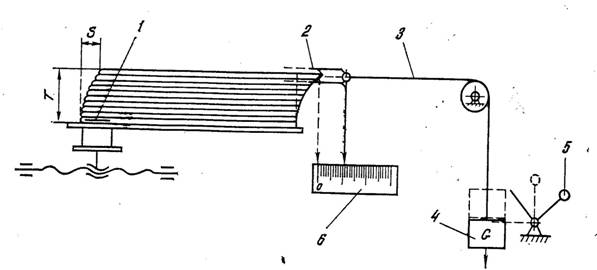

| 10 | Технические требования к качеству шитья, методы контроля |
В сшитых блоках должно быть полное число доброкачественных тетрадей данного издания, расположенных в порядке следования сигнатурных номеров, верхними краями в одну сторону.
Сшитые блоки по виду шитья, числу и размеру стежков, применяемым швейным материалам (нитки, марля) должны соответствовать указаниям технологической карты-наряда и утвержденному эталону.
Книжные блоки должны быть сшиты прочно, без обшивок: тетради прошиты всеми стежками, нитки стежков плотно натянуты и не повреждены (не порваны, без спущенных петель), петли на корешке плотно затянуты.
Предельное отклонение верхних краев и корешковых сгибов тетрадей от общей плоскости (неплоскостность) — не более 1 мм.
Предельное смещение осей проколов от линии сгибов тетрадей — не более 1 мм.
Ширина клеевой полоски после склейки — 2,5±1 мм, отступ наносимой клеевой полоски от корешкового сгиба тетради — 2±1 мм.
Плотность шитья книжных блоков характеризуется допускаемой величиной сдвига корешка блока под действием груза массой в 1 кг в приборе ПШ (табл.10.1).
| Толщина корешка, мм | Сдвиг корешка, мм | Толщина корешка, мм | Сдвиг корешка, мм |
| 11-15 | 3,0-4,0 | 36-40 | 9,5-11,5 |
| 16-20 | 4,5-5,5 | 41-45 | 11,0-13,0 |
| 21-25 | 5,5-7,0 | 46-50 | 12,0-14,5 |
| 26-30 | 7,0-8,5 | 50-55 | 13,0-16,0 |
| 31-35 | 8,0-10,5 | 55-60 | 14,5-17,5 |

Рис. 10.1 Схема прибора ПШ для контроля плотности шитья книжных блоков
Сшитый книжный блок линейкой 1, вставленной в нижнюю тетрадь, прижимают к упору. К середине верхней тетради прикрепляют зажим 2, соединенный тросиком 3 с грузом 4 массой 1 кг. При освобождении груза поворотом рукоятки 5 верхняя тетрадь блока сдвигается относительно нижней. Величину этого сдвига находят по шкале 6. Для определения плотности шитья книжных блоков, вставленных в переплет, груз увеличивают до 2 кг.
На сшитых блоках должна стоять метка швеи.